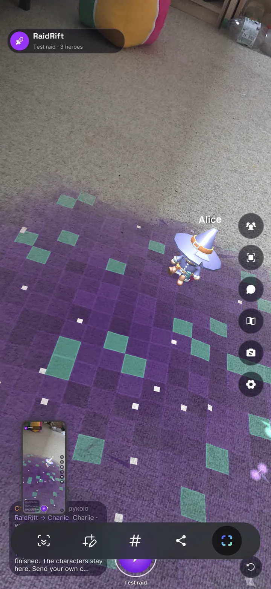

Room mesh → live NavMesh
The phone meshes the room through ARCore and rebakes a doll-sized navigation map every 0.8 s. Heroes path around furniture and jump onto surfaces 15 cm to 1 m high.
- 30 cm heroes
- 4 cm voxels
- Hides behind scanned furniture